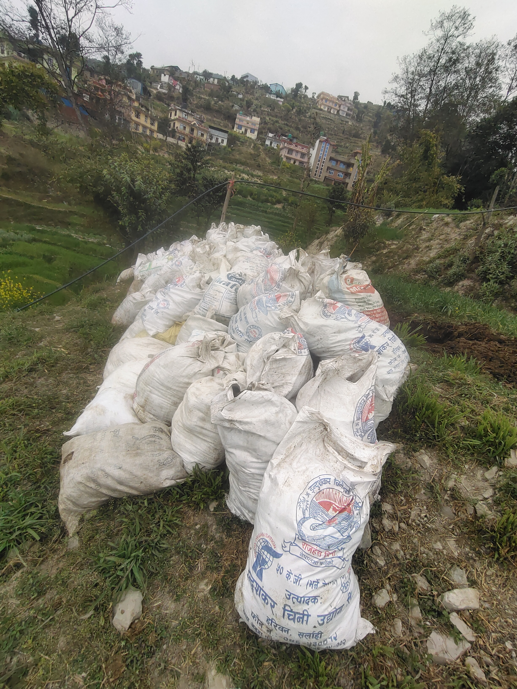
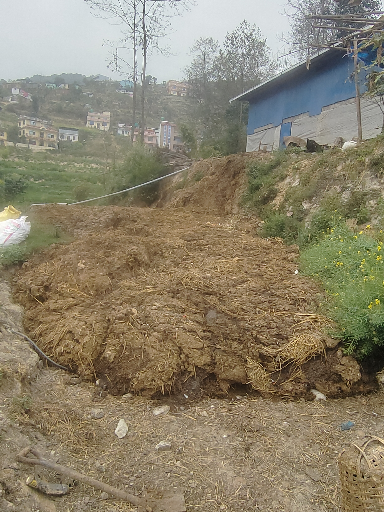

🏡 About Timalsina Farm
Founded by nitta parsad Timalsina, our farm is rooted in respect for land and livestock. We combine ancestral wisdom with modern agroecology to produce healthy food while regenerating the soil.




We are a family-run farm committed to sustainable agriculture and community well-being.
1 acres of land+ types of grass and seasoned grass are cultivated and managed
100% heirloom seeds & native only buffalo breed
Certified organic since 2005
Member of family Cooperative
100% chemical free since 1985
100% natural fertilizers used
100% natural feed for livestock
100% free and natural manure and dung available
100% pure milk production in our agro farm
elevation 1650m
perfect microclimate for citrus & coffee
Annual rainfall: 1800mm